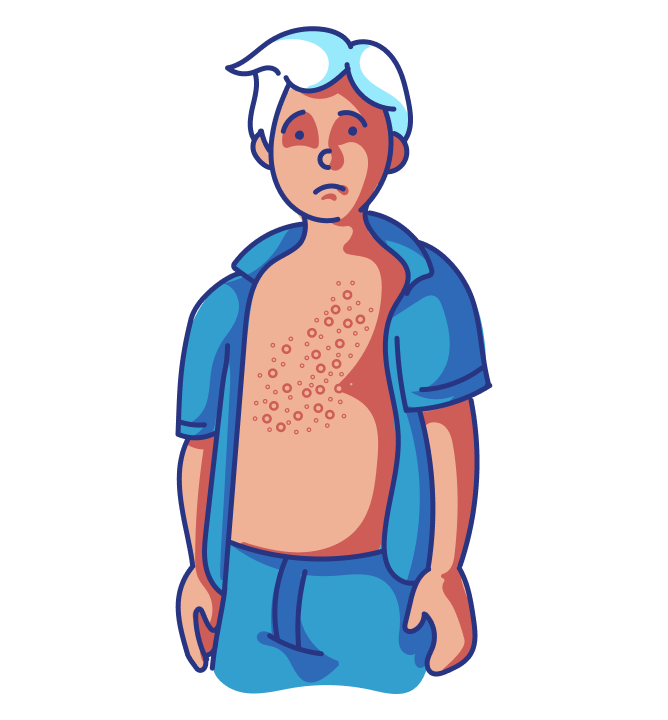
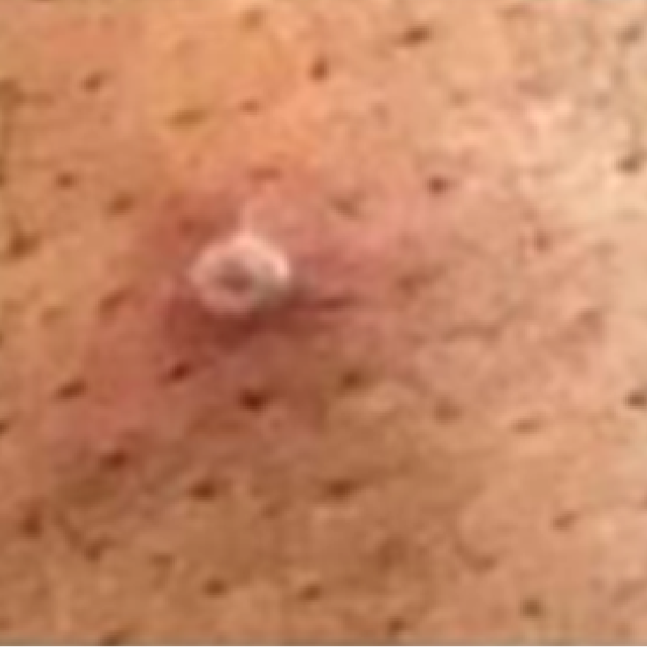
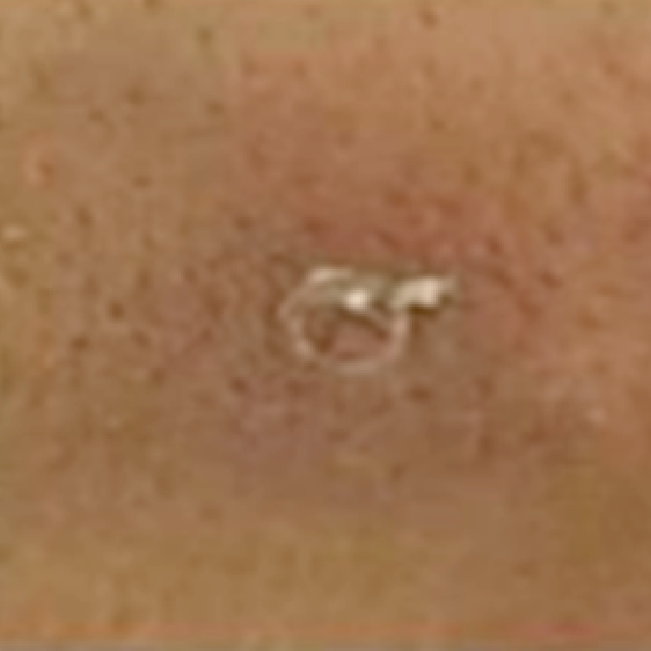
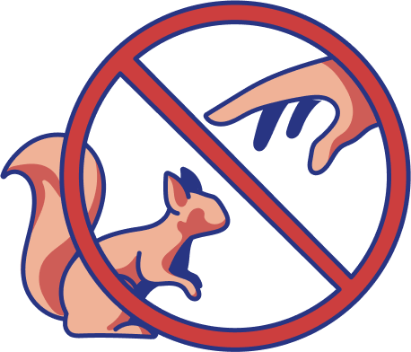

SOBRE O MATERIAL
Este material tem como objetivo apresentar os aspectos clínicos da doença, sinais e sintomas, além dos fatores de risco, assegurando a diferenciação clínica da mpox/varíola dos macacos de outros quadros que causam lesões cutâneas. Busca ainda discutir a abordagem terapêutica e os tratamentos adotados, bem como medidas de prevenção e controle, vacinas e estratégias de prevenção não farmacológicas.
 Objetivos de Aprendizagem
Objetivos de Aprendizagem
 Carga horária de estudo
Carga horária de estudo
10 horas
Em geral, a mpox é classicamente descrita como uma doença benigna que causa sinais e sintomas que duram de 2 a 4 semanas. Vimos na unidade 1 que ela é parecida com a varíola, embora seja clinicamente mais branda. Mas como se apresenta a mpox? Será que o paciente manifesta apenas as lesões típicas da doença? Você já pensou nisso?
MANIFESTAÇÕES CLÍNICAS DA MPOX
Até o surto atual de mpox, as manifestações clínicas da doença eram descritas com base nos casos humanos observados na África e relatados em artigos científicos e capítulos de livros, que eram escassos. A principal forma de transmissão identificada até então era o contato de uma pessoa com gotículas respiratórias de alguém infectado com o vírus da mpox (MPXV), que era seguido por um período de incubação de 5 a 21 dias e depois por um período prodrômico, isto é, um período de 0 a 3 dias de duração da doença, caracterizado pelo aparecimento súbito de febre, mal-estar geral, mialgia, cefaleia e fadiga decorrente da replicação e disseminação e circulação do vírus pelo organismo. Logo após os sintomas prodrômicos, apareciam as lesões cutâneas, todas na mesma fase evolutiva, de distribuição centrífuga, atingindo principalmente face e membros, acompanhadas de aumento de linfonodos especialmente nas cadeias cervicais e submandibulares. Essa fase correspondia à instalação e multiplicação do vírus nas células da pele e das mucosas. A patogenia e os sinais e sintomas descritos da doença são bastante semelhantes aos da varíola humana. A taxa de mortalidade descrita era de 0% a 11% nos diferentes surtos, sendo maior nos que ocorreram na África Central.
No atual surto, que acometeu pessoas em regiões mais ricas e mais desenvolvidas cientificamente no planeta, inúmeras séries de casos foram analisadas e publicadas, relatando-se patogenia e manifestações clínicas diferentes das descritas anteriormente. A transmissão por contato direto com secreção das lesões cutâneas parece ser a mais frequente. Depois do contato, aparecem as lesões no local de inoculação. Na maior parte dos casos, elas surgem em região genital e anal após contato sexual, sem a ocorrência de período prodrômico com sintomas sistêmicos. Além disso, observam-se casos com poucas lesões localizadas, sem a distribuição centrífuga e com lesões simultâneas em diferentes fases evolutivas. A taxa de mortalidade descrita no surto atual varia de 3% a 6%.

Um estudo com 528 casos de mpox ocorridos entre 27 de abril e 24 de junho de 2022, distribuídos em 16 países, observou que 527 pacientes eram homens, com idade média de 28 anos. Em 95% dos casos, a suspeita é de que a transmissão tenha ocorrido durante atividade sexual. Desses pacientes, 95% tinham lesões cutâneas, 64% menos de 10 lesões, 73% com lesões anogenitais e 41% com lesões mucosas. Por outro lado, 54 pacientes apresentaram uma lesão única genital. Os sintomas sistêmicos mais frequentes foram febre (62%), letargia (41%), mialgia (31%) e cefaleia (27%). Linfoadenopatia foi observada em 56% dos pacientes. Nessa coorte, o período de incubação foi, em média, de 7 dias, e 70 pacientes (13%) foram hospitalizados para analgesia, tratamento de infecção bacteriana secundária, observação de lesão ocular, insuficiência renal aguda e/ou por dificuldade de isolamento domiciliar. Observou-se ainda que 29% dos pacientes tinham uma infecção sexualmente transmissível (IST) concomitante (THORNHILL et al, 2022).
No Instituto Nacional de Infectologia Evandro Chagas (INI/Fiocruz), entre 12 de junho e 19 agosto de 2022, 208 pacientes com mpox foram atendidos, dos quais 200 eram do sexo masculino (96,2%). Desse total de 200 homens, 89,7% declararam que faziam sexo com homens. A mediana de idade dos 208 pacientes era de 33 anos. Com relação às lesões da mpox nos 208 pacientes atendidos, 76,1% tinham lesões disseminadas e 23,9% localizadas, 77,3% tinham lesões genitais, 33,1% anais e 4,8% apresentavam superinfecção bacteriana. Os sinais e sintomas sistêmicos mais relatados foram febre (63%), adenomegalia (47,4%), cefaleia (31,7%), astenia (26,1%), dor de garganta (25,4%), mialgia (21,4%) e diarreia (10,8%). A avaliação de ISTs concomitantes mostrou que 53,2% eram portadores de HIV, 21,2% tiveram diagnóstico de sífilis, 10,6% de clamídia e 9,9% de gonorreia. Um total de 33% tinha alguma IST ativa no momento do diagnóstico de mpox (SILVA et al. 2022).
No Brasil, de 7 de junho a 1º de outubro de 2022, 7.992 casos de mpox foram confirmados. Desse total, 91,8% eram homens, com mediana de idade de 32 anos. Os sinais e sintomas mais relatados foram febre (58,0%), adenomegalia (42,4%) e cefaleia (39,9%). Além disso, 27,5% declararam ser imunossuprimidos, 34,6% viviam com HIV e 10,5% tinham IST. Nesse período, três óbitos foram registrados (PASCOM et al. 2022).
Como já dissemos, o surgimento de lesões cutâneas é o principal sinal de suspeição diagnóstica. Essas lesões aparecem inicialmente como máculas e pápulas, mas depois progridem para vesiculação, pustulação, umbilicação, formação de crostas e descamação durante um período de 14 a 21 dias (Figura 1). As lesões, geralmente, são profundas, podendo ser pruriginosas e bastante dolorosas. Lesões em mucosas oral (Figura 2) e genital (Figura 3), frequentemente descritas no surto atual de mpox, estão presentes em até 70% dos casos. A despigmentação e as cicatrizes são vistas como sequelas (Figura 4) (Ali et al. 2022, Torres et al. 2022).
Figura 01 - Lesão cutânea de mpox em seus vários estágios:
Clique na imagem para interagir.





Clique nas abas para interagir
O aumento dos linfonodos submandibulares, cervicais e inguinais pode ser observado de um a dois dias após o início da erupção cutânea.
As complicações são decorrentes de infecção bacteriana secundária e da localização das lesões. A infecção bacteriana secundária da pele é bastante comum (Figura 5), observada em até um quinto dos pacientes, podendo evoluir para quadros mais graves, como pneumonia, encefalite e sepse, se não for identificada e tratada adequadamente (TORRES et al. 2022). Complicações decorrentes da localização das lesões incluem, por exemplo, o envolvimento ocular causando conjuntivite e ceratite, que podem evoluir para úlceras de córnea e sinequias oculares entre a íris e a cápsula anterior do cristalino. O envolvimento de áreas anatômicas que possa resultar em sequelas graves de cicatrizes ou estenoses no sítio afetado, como esôfago e uretra, requer acompanhamento médico mais prolongado (SILVA et al. 2022).

Saiba mais!
Fique atento! Confusão mental e convulsões são raras, mas também podem acontecer como consequência da encefalite viral.
Apesar de pouco frequentes, formas graves e óbito podem ocorrer, principalmente em pacientes com imunodepressão severa, como descrito no surto atual.
Em uma análise de 57 casos graves hospitalizados nos EUA, observou-se que 89,5% dos pacientes tinham algum tipo de imunocomprometimento (82,5% vivendo com HIV, dos quais apenas 8% estavam em tratamento antirretroviral e 72,1% tinham contagem de células CD4+ em sangue periférico menor que 50 cels/mm³) e 5% eram gestantes. Todos os pacientes tinham lesões cutâneas severas (Figura 6) e 68% tinham também lesões mucosas. Outros órgãos acometidos incluíam pulmões (21%), olhos (21%), sistema nervoso central e medula espinhal (7%) (MILLER et al. 2022).
O Center for Disease Control and Prevention (CDC) dos EUA lançou, em janeiro de 2023, um alerta sobre mpox em grávidas, relatando 23 casos, 3 dos quais próximos ao parto. Os bebês nasceram também com a doença, mas não houve casos graves (OAKLEY Et al. 2023). Informações sobre mpox em grávidas ainda são muito limitadas, mas deve-se pesquisar lesões genitais desde o pré-natal até o momento do parto, realizar exames específicos para os casos suspeitos e avaliar individualmente o uso de antivirais e a via de parto (RAMNARAYAN et al. 2022).
Curiosidade!
Você sabia que as lesões causadas pelo MPXV são muito parecidas com lesões causadas por outros microrganismos? Por isso, é de extrema importância que os profissionais da saúde estejam atentos e realizem, quando necessário, o diagnóstico diferencial das lesões.
DIAGNÓSTICO CLÍNICO DIFERENCIAL DAS LESÕES
A mpox deve ser diferenciada de outras infecções virais que também podem causar vesículas e pústulas, como varicela, herpes-zoster e infecção pelo vírus do herpes simples. Outras infecções por poxvírus, como molusco contagioso, estomatite bovina e orf, também podem causar lesões cutâneas semelhantes à mpox, bem como algumas infecções bacterianas e virais de pele, como impetigo, antraz cutâneo, sarampo, doença mão-pé-boca e outras (Figura 7) (DROGA et al., 2023).
Vesicopústulas ou pseudopústulas umbilicadas podem ser confundidas com pápulas umbilicadas translúcidas de molusco contagioso (Figura 8), particularmente em pacientes que têm lesões confinadas à genitália. A apresentação da mpox como uma úlcera genital solitária tem sido bem documentada na literatura e precisa ser diferenciada de outras ISTs que causam úlceras genitais, como sífilis, cancroide, condiloma acuminado e gonorreia disseminada. Foi observada a coinfecção de mpox com várias ISTs, e a evidência de uma ou mais ISTs não deve excluir o diagnóstico de infecção por mpox (DROGA et al., 2023).
A história detalhada do paciente, incluindo histórico de viagens, contatos sexuais, informações sobre contato próximo com qualquer pessoa que estivesse com sintomas semelhantes, além da análise do momento dos sintomas prodrômicos e da formação das lesões cutâneas, pode ajudar a distinguir as infecções. Embora a varíola tenha sido erradicada, ela deve ser considerada como um diagnóstico diferencial devido à possibilidade de bioterrorismo.
Saiba mais!
A Covid-19 apenas raramente provoca uma erupção pustulovesicular, mas merece consideração em virtude da atual pandemia.
FATORES DE RISCO ASSOCIADOS À INFECÇÃO PELO MPXV
Dadas as características de transmissão zoonótica e inter-humana, a epidemiologia da mpox e os fatores de risco têm sido variados ao longo do tempo. Por exemplo, entre 1981 e 1986, quase 100% dos casos registrados no Congo eram crianças, e os fatores de risco associados foram: morar em áreas florestais, ser do sexo masculino, ter idade inferior a 15 anos e não ter vacinação prévia contra varíola (KUMAR et al., 2022, RIMOIN Et al., 2010, DIMITRAKOFF, 2022, THORNHILL et al., 2022)
Em 2003, nos EUA, ocorreu o primeiro relato de mpox fora do continente africano. Identificou-se que a origem dessa contaminação foi uma remessa de animais de estimação exóticos e selvagens de Gana. O surto resultou em 47 casos humanos, mas nenhum caso de transmissão inter-humana foi documentado. Nessa ocasião, os fatores de risco associados foram: exposição a um animal doente, exposição a gaiolas limpas e camas de um animal doente, ou o contato por toque com um animal doente (REYNOLDS et al., 2007).
No surto atual, a determinação estatística dos fatores de risco ainda é escassa, portanto os dados epidemiológicos têm auxiliado a identificar alguns fatores associados, sendo a imunodepressão o mais relatado.
Saiba mais!
Fique atento! Devido a ainda curta duração do surto atual, as informações aqui apresentadas são baseadas em relatos epidemiológicos descritivos, não em estudos analíticos para determinação de fatores de risco, sendo, portanto, necessários estudos mais robustos sobre esses fatores.
TRATAMENTO E ABORDAGEM TERAPÊUTICA
Manejo sintomático
Em casos suspeitos ou confirmados de mpox, a base do tratamento é o manejo sintomático. A terapia é focada no manejo da dor oral, genital e anorretal; na redução do prurido; no monitoramento da febre; no tratamento da proctite, se presente; e na limpeza das lesões de pele. As opções de tratamento incluem enxágues anestésicos, anestésicos tópicos, banhos de assento ou de aveia, laxantes, analgésicos, anti-histamínicos orais ou tópicos ou outros géis ou loções não irritantes, como calamina ou mentol. De modo geral, a maioria dos pacientes se recupera apenas com o controle dos sintomas. Nos pacientes que desenvolvem dor intensa, são necessários regimes de tratamento multimodal, que podem incluir opioides. (BRASIL, 2022).
Saiba mais!
ATENÇÃO! Em caso de infecções bacterianas secundárias, deve-se introduzir antibioticoterapia apropriada.
Terapias antivirais
Saiba mais!
Vários antivirais podem ser prescritos para o tratamento de mpox. Alguns desses medicamentos foram aprovados para o tratamento da varíola com base em modelos animais e estudos de dose e segurança em humanos saudáveis, portanto espera-se que tenham a mesma atividade contra a mpox. Nesse momento, o tecovirimat é o tratamento de escolha (FRENOIS-VEYRAT et al., 2022; CENTERS FOR DISEASE CONTROL AND PREVENTION, 2022)
É um inibidor potente da proteína do vírus necessária para a formação de uma partícula viral infecciosa, sendo recomendado para casos em que há risco elevado de doença grave. Deve-se avaliar cada paciente quanto à elegibilidade para receber o antiviral. O TPOXX é recomendado para tratamento compassivo para pacientes com resultado laboratorial positivo/detectável para MPXV com lesão ocular e/ou internado com a forma grave da doença, apresentando uma ou mais das seguintes manifestações clínicas (BRASIL, 2022):
Apesar de esse medicamento não ter registro no Brasil, a Agência Nacional de Vigilância Sanitária (Anvisa), após solicitação do Ministério da Saúde (MS), autorizou, em caráter excepcional e temporário, a dispensa do registro do medicamento importado pelo Ministério, considerando a emergência em saúde pública.
A dose recomendada de TPOXX depende do peso do paciente. Por exemplo, para pacientes com peso ≥40 kg e <120 kg, a dose indicada é de 600 mg (três cápsulas) a cada 12 horas. A formulação intravenosa (IV) não deve ser usada em pacientes com insuficiência renal grave (depuração de creatinina <30mL/min) e deve ser usada com cautela em pacientes com doença renal moderada ou leve, bem como em crianças menores de dois anos de idade devido ao acúmulo do ingrediente hidroxipropil-beta-ciclodextrina na formulação IV. A formulação IV pode ser transferida para terapia oral, caso o paciente possa tomar medicamentos orais.
São utilizados se as lesões de mpox envolverem o olho ou estruturas acessórias do olho. A trifluridina tópica e a vidarabina têm sido utilizadas para infecções causadas pelo vírus Vaccinia, visando ao tratamento da ceratite e à prevenção do envolvimento da córnea e da conjuntiva em pacientes com lesões palpebrais. As aplicações devem ser realizadas a cada 4 horas por 7 a 10 dias (Cash-Goldwasser et al. 2022)
CONTROLE DE TRANSMISSÃO DO MPXV
A Organização Mundial da Saúde (OMS) (2022) tem destacado diversas estratégias para controle e prevenção da mpox. Primeiramente, destaca-se a necessidade de aumentar a conscientização sobre os fatores de risco e de educar as pessoas sobre as medidas que podem ser tomadas para reduzir a exposição ao vírus. Certamente, a vacinação é uma estratégia crucial, por isso alguns países já estão desenvolvendo políticas para oferecer a vacina a pessoas que possam estar em risco, como pessoal de laboratório, equipes de resposta rápida, profissionais de saúde e as populações vulneráveis de que tratamos na unidade 1.
Com relação ao risco de transmissão de pessoa para pessoa, a OMS destaca que a vigilância e a rápida identificação de novos casos são essenciais para a contenção do surto. Durante os surtos de mpox, o contato com pessoas infectadas é o fator de risco mais significativo para a infecção pelo MPXV. Os profissionais de saúde e os membros da família deles correm maior risco de infecção. Os profissionais de saúde que cuidam de pacientes com suspeita ou confirmação de infecção ou manipulam amostras devem implementar as precauções-padrão de controle de infecção. Se possível, pessoas previamente vacinadas contra varíola devem ser selecionadas para cuidar do paciente.

Com relação ao risco de transmissão zoonótica, a OMS recomenda que se deve evitar o contato desprotegido com animais silvestres, principalmente doentes ou mortos, incluindo a carne, o sangue e outras partes deles. Além disso, todos os alimentos que contenham carne ou partes de animais devem ser bem cozidos antes de serem consumidos.
A restrição ao comércio de animais selvagens e exóticos deve ser ainda mais efetiva. Do mesmo modo, animais em cativeiro potencialmente infectados com MPXV devem ser isolados de outros animais e colocados em quarentena. Qualquer animal que possa ter tido contato com um animal infectado deve ser colocado em quarentena, manuseado obedecendo-se as precauções-padrão e observado quanto aos sintomas da mpox por 30 dias.
VACINAS E ESTRATÉGIAS DE PREVENÇÃO NÃO FARMACOLÓGICAS
A primeira vacina contra a varíola foi descoberta por Edward Jenner, em 1796, que sistematizou os conhecimentos empíricos para prevenir a varíola. Ele observou pessoas que ordenhavam vacas doentes - que tinham pústulas formadas pelo vírus Vaccinia nas tetas - e, mesmo com esse contato, não adoeciam. A vacina contra a varíola chegou ao Brasil em 1804 por iniciativa do Barão de Barbacena.
Anos mais tarde, percebeu-se que a imunidade gerada pela vacina de Jenner era perdida. Com isso, surgiram novas discussões e experimentos, que levaram à mudança de técnica de produção da vacina, iniciando-se a era da vacina animal. Mesmo com a comprovação da eficácia da nova técnica, a vacina animal demorou mais de duas décadas para sair da Europa e chegar ao Brasil, o que aconteceu em 1887.
Nesse mesmo ano, houve uma epidemia de varíola no Rio de Janeiro. O médico Pedro Affonso Franco, diretor da Santa Casa de Misericórdia, recebeu do Instituto Chambon de Paris amostra da vacina animal, que foi usada para produção de vacinas no Brasil. Na Santa Casa, foi montado o serviço de vacinação e oferta da vacina no Rio de Janeiro (FERNADES et al. 2022).
Em 1966, foi instituída a Campanha de Erradicação da Varíola, como parte do Programa Mundial de Erradicação da Varíola da OMS. A campanha obteve êxito e, em 1980, foi declarada a erradicação mundial da varíola, após longo processo de certificação da interrupção da transmissão da varíola de pessoa para pessoa (HERNDERSON, 1980).
Com a erradicação da varíola no Brasil e no mundo, foi estabelecido no país que a vacinação contra a varíola não seria mais obrigatória. Desde então, o Brasil não tem reserva estratégica dos imunobiológicos mais antigos contra a varíola.
Assim, no atual surto de mpox no Brasil e no mundo, iniciado em maio de 2022, o suprimento de vacinas mais recentes é limitado e as estratégias de acesso estão em discussão. Portanto, a OMS recomenda que a utilização das vacinas leve em consideração o atual cenário e as evidências.
Os orthopoxvirus têm alta similaridade entre si, portanto as vacinas produzidas com vírus Vaccinia geram imunidade contra a varíola humana e a mpox. Os conhecimentos sobre a eficácia desses imunizantes contra a mpox ainda são bastante restritos, por isso a OMS solicita que os países coletem e compartilhem dados sobre a eficácia das vacinas.
Atualmente, somente três vacinas (MVA-BN, ACAM2000 e LC16) estão disponíveis para uso no mundo, por demonstrarem eficácia para proteção cruzada contra o MPXV (FERDOUS et al. 2023). Destaca-se que a vacinação em massa contra a mpox não é recomendada pela OMS. A orientação da OMS é de que sejam adotadas estratégias robustas de vigilância e monitoramento dos casos e investigação e rastreamento de pessoas que tenham tido contato com a doença como principais medidas de prevenção da disseminação da doença.
Agora vamos conhecer um pouco mais as 3 vacinas existentes (WHO, 2022):
Clique nos itens para interagirÉ uma vacina baseada em um Orthopoxvirus não replicante de terceira geração atenuado e vivo, o Vaccinia Ankara Modificado (MVA). A Food and Drug Administration (FDA), dos Estados Unidos da América (EUA), autorizou o uso emergencial dessa vacina nos EUA para prevenção da mpox em indivíduos com 18 anos ou mais de idade com elevado risco de infecção. Ela é administrada em duas doses, com quatro semanas de intervalo, por via subcutânea ou intradérmica e pode ser aplicada em indivíduos imunocomprometidos e gestantes. Fabricada pela empresa dinamarquesa Bavarian Nordic, recebe nomes diferentes de acordo com o local em que é distribuída, sendo chamada de Jynneos nos EUA, Imvamune no Canadá e Imvanex na União Europeia (PITTMAN et al. 2019).
É uma vacina de segunda geração indicada para a prevenção da varíola. Foi autorizada para uso contra a varíola no surto atual por protocolo de Novo Medicamento Investigacional de Acesso Expandido (EA-IND), que requer consentimento do usuário. Fabricada pela Emergent BioSolutions, a vacina ACAM2000 contém um vírus Vaccinia vivo replicante.
É uma vacina liofilizada, de terceira geração, preparada em cultura de células LC16 “KMB”, aprovada para prevenção de varíola, e seu titular de autorização para comercialização é a KM Biologics Co., Ltd.
Saiba mais!
Fique atento! Cabe destacar que os programas de vacinação devem ser acompanhados por uma forte campanha de informação, farmacovigilância robusta e realização de estudos de efetividade da vacina. Hoje, o fornecimento da vacina é limitado e, nesse contexto, as doses devem ser priorizadas para pessoas com elevado risco de doença grave causada pela infecção por MPXV. Mais detalhes sobre as prioridades e estratégias de vacinação serão abordadas na unidade 4.
Outras estratégias não farmacológicas de prevenção e não transmissão do vírus incluem o uso de equipamentos de proteção individual (EPIs) e medidas comportamentais, como isolamento domiciliar, evitar contato íntimo com indivíduos com lesões suspeitas ou confirmadas de mpox, reduzir a prática de sexo com múltiplos parceiros e aplicar os devidos cuidados ao frequentar eventos de massa. Mais detalhes sobre estratégias de prevenção e cuidado serão abordados nas unidades 4 e 5.
REFERÊNCIAS
ALI, S. N. Et al. Monkeypox Skin Lesion Detection Using Deep Learning Models: A Feasibility Study. arXiv, 2207.03342v1, 6 jul. 2022. Disponível em: https://arxiv.org/pdf/2207.03342.pdf. Acesso em: 30 dez. 2022.
BRASIL. Ministério da Saúde. Plano de Contingência Nacional para Monkeypox. Centro de Operações de Emergência em Saúde Pública: COE Monkeypox. Versão 2, 2022. Brasília, 2022.
BRASIL. Brasil recebe primeiros tratamentos
contra varíola dos macacos. Disponível em:
CASH-GOLDWASSER S, et al. Ocular Monkeypox - United States, July-September 2022. MMWR Morb Mortal Wkly Rep 2022; 71:1343. CENTERS FOR DISEASE CONTROL AND PREVENTION. Mpox in the U.S. Disponível
em:
CURITIBA. Secretaria Municipal da Saúde. Atlas de diagnóstico diferencial de lesões de monkeypox. 2022. v. 1. Disponível em: https://www.crmpr.org.br/uploadAddress/Atlas-lesoes-MONKEYPOX-e-DX-DIFERENCIAL-30.06.2022[5388].pdf.
Acesso em: 13 nov. 2022.
DIMITRAKOFF, J. Monkeypox Virus Infection across 16 Countries - April-June 2022. The New England Journal of Medicine, v. 387, n. 25, p. e69, 22 dez. 2022. DOGRA, S. et al. Monkeypox: a new
global health emergency with predominant dermatological manifestations. International Journal of Dermatology, v. 62, n. 1, p. 3–11, jan. 2023.
FERDOUS, J. et al. A review on monkeypox virus outbreak: New challenge
for world. Health Science Reports, v. 6, n. 1, p. e1007, jan. 2023.
FERNANDES, Tania. The small pox vaccine: its first century in Brazil (from the Jennerian to the animal vaccine). Hist. Cien. Saude-Manguinhos.,
vol. 6, n. 1, Jun. 1999. Disponível em: https://www.scielo.br/j/hcsm/a/ync9ZfnBHqqjgrMGpMGYj3m/?lang=pt#. Acesso em: 13 nov. 2022.
FRENOIS-VEYRAT, G. et al. Tecovirimat is effective against human monkeypox virus
in vitro at nanomolar concentrations. Nature Microbiology, v. 7, n. 12, p. 1951-1955, dez. 2022.
HENDERSON, D.A. Uma vitória para toda a humanidade. A saúde do Mundo. Revista Oficial Ilustrada da Organização Mundial da Saúde. Maio. 1980. Disponível em: https://apps.who.int/iris/bitstream/handle/10665/202490/WH-1980-May-p3-5-por.pdf.
Acesso em: 15 maio 2022.
KUMAR, A. M. et al. Monkeypox Outbreak, Vaccination, and Treatment Implications for the Dermatologic Patient: Review and Interim Guidance from the Medical Dermatology Society. Journal of the American Academy of Dermatology, p. S0190- 9622(22)02977–2,
14 dez. 2022.
MILLER, M. J. et al. Severe Monkeypox in Hospitalized Patients — United States, August 10–October 10, 2022. Morbidity and Mortality Weekly Report, v. 71, n. 44, p. 1412-1417, nov. 2022.
OAKLEY LP, et al "Mpox cases among cisgender women and pregnant persons -- United States, May 11-November 7, 2022" MMWR 2023; DOI: 10.15585/mmwr.mm7201a2.
PASCOM, A.R.P. et al. Características epidemiológicas
e clínicas dos casos de monkeypox no Brasil em 2022: estudo transversal. Epidemiologia e Serviços de Saúde, Brasília, 31(3):e2022851, 2022 PITTMAN, P. R. et al. Phase 3 Efficacy Trial of Modified Vaccinia Ankara as a
Vaccine against Smallpox. New England Journal of Medicine, v. 381, n. 20, p. 1897–1908, 14 nov. 2019.
REYNOLDS, M. G. et al. Spectrum of Infection and Risk Factors for Human Monkeypox, United States, 2003. Emerging Infectious
Diseases, v. 13, n. 9, p. 1332–1339, set. 2007.
RIMOIN, A. W. et al. Major increase in human monkeypox incidence 30 years after smallpox vaccination campaigns cease in the Democratic Republic of Congo. Proceedings of the
National Academy of Sciences, v. 107, n. 37, p. 16262–16267, 14 set. 2010.
RAMNARAYAN, P., et al. Neonatal monkeypox virus infection. N Engl J Med. DOI: 10.1056/NEJMc2210828 SILVA, M.S.T. et al. Ambulatory and hospitalized
patients with suspected and confirmed mpox: An observational cohort study from Brazil. The Lancet Regional Health - Americas 2022;▪: 100406. Published Online XXX. https://doi.org/10. 1016/j.lana.2022. 100406 THORNHILL, J. P. et
al. Monkeypox Virus Infection in Humans across 16 Countries — April–June 2022. New England Journal of Medicine, v. 387, n. 8, p. 679–691, 25 ago. 2022.
TORRES, H. M. et al. Approaching Monkeypox: A Guide for Clinicians.
Topics in Antiviral Medicine, v. 30, n. 4, p. 575-581, 1 out. 2022. WORLD HEALTH ORGANIZATION. Monkeypox. Disponível em:
WORLD HEALTH ORGANIZATION. Vaccines and immunization for monkeypox, Interin guidance. 16 Nov. 2022. Disponível em: https://www.who.int/publications/i/item/WHO-MPX-Immunization .Acesso em: 31 dez.
2022.